CAD
✅ 作业清单
- 使用 Fusion 360 搭建小车基础模型
- 补充车轮、支架、连接件等零部件
- 输出版本一建模效果图与制作过程图
- 输出版本二优化效果图与制作过程图
- 整理网页排版并完成展示说明
🎯 最终成果展示
本次 CAD 小车建模重点分为四个阶段：座椅结构建模、车窗草图与拉伸、车身刻字装饰，以及最终整车展示。每一阶段都先完成草图，再进行实体化与细节优化，最终形成一套完整、连贯的建模流程。
🚗 项目介绍
本周我们继续使用 Fusion 360 完成 CAD 建模练习，重点在于补充座椅、车窗和车身细节，使模型从基础结构逐步走向完整的外观展示。
🧩 建模工具与任务
工具：Fusion 360。任务：完成座位草图与成品、车窗草图与拉伸、车身刻字设计，以及最终整车呈现，并整理各阶段说明。
阶段一：座位结构设计
这一阶段从座椅的轮廓与支撑关系入手，先确定整体比例，再通过草图转实体完成座椅的基础形态与稳定性布局。它是后续车身细节融合的基础。
- 优先完成座椅的结构比例与支撑关系
- 保证座椅与车身整体的协调性
- 让草图转实体的过程更稳定、更易后续修改
座位草图阶段
步骤1：创建草图。在 Fusion 360 中选择合适的工作平面，使用线条工具绘制座椅的基础轮廓，确定整体形状和比例关系。
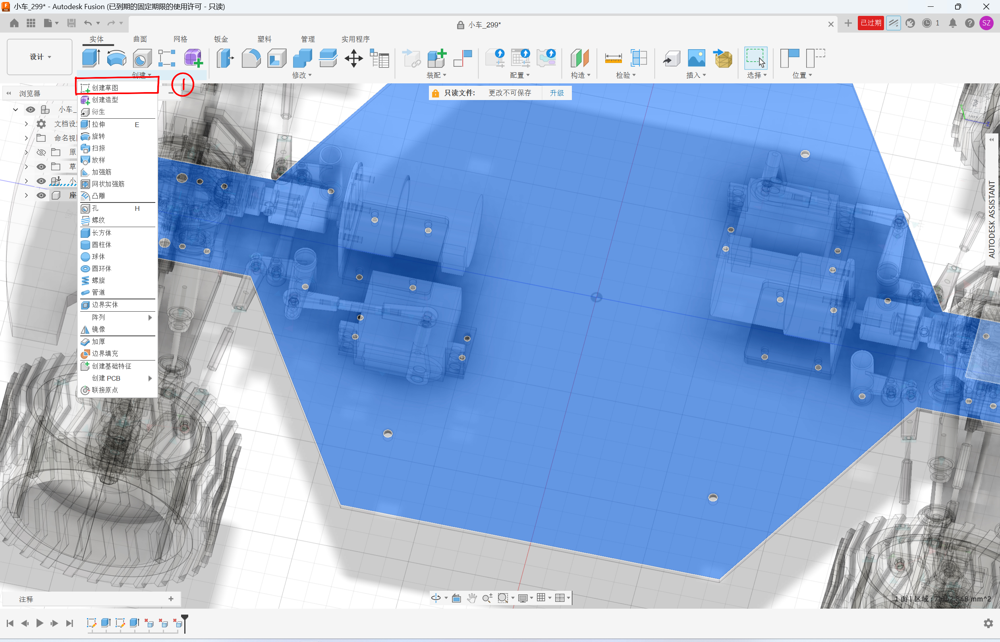
座位草图 1
步骤2：创建图形并标注尺寸。为草图中的关键部位添加尺寸约束，确保座椅的宽度、深度和高度符合设计要求，建立精确的尺寸体系。
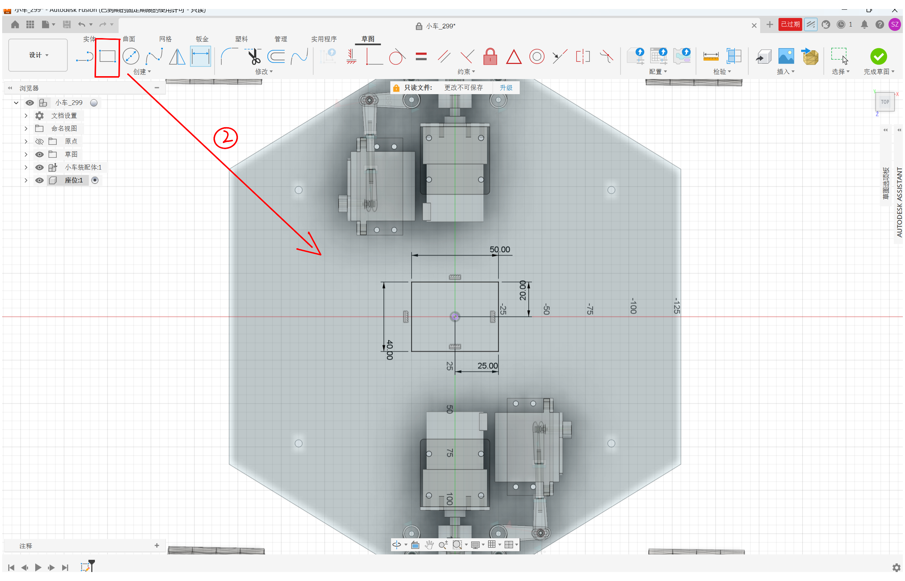
座位草图 2
座位成品阶段
步骤3：拉伸成型。将二维草图沿垂直方向进行拉伸操作，生成三维实体结构，形成座椅的基本形态和厚度。
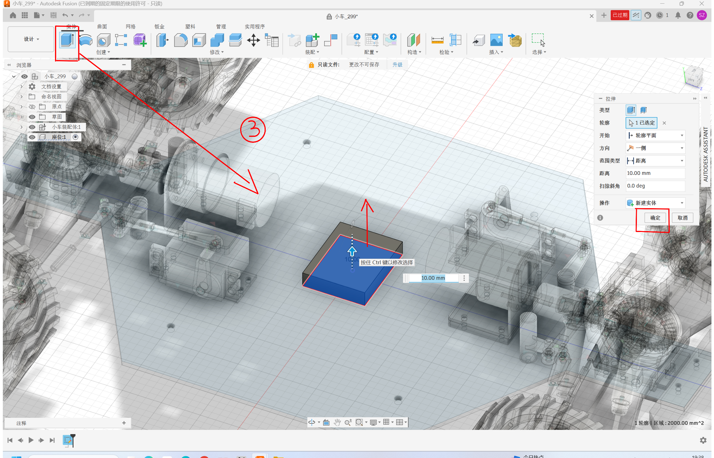
座位草图 3
步骤4：约束后的草图优化。对草图添加几何约束（如平行、垂直、相切等），确保各部分之间的位置关系准确，提高模型的稳定性和可编辑性。
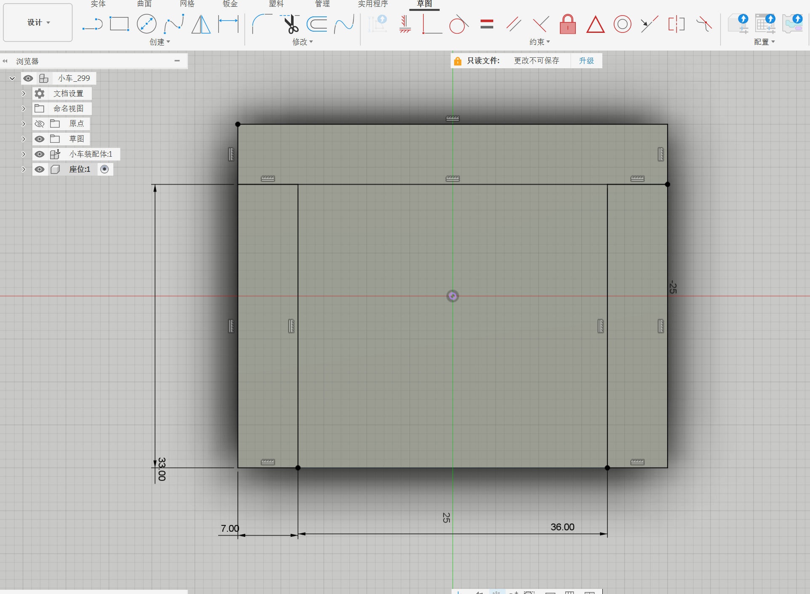
座位草图 4
步骤5：座位草图成品。完成所有约束和优化后，座椅的三维模型呈现最终效果，包括完整的轮廓、精确的尺寸和稳定的结构，可以进入下一阶段的车窗建模。
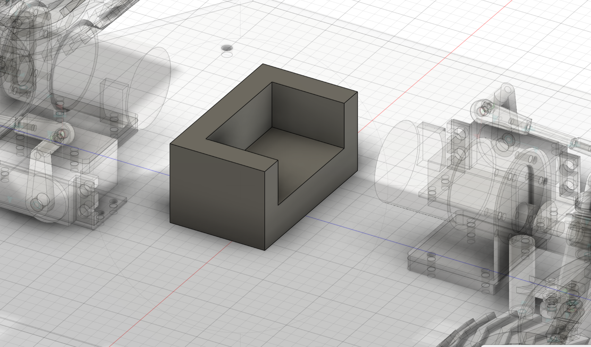
完成后的座位成品
阶段二：车窗草图与拉伸
这一阶段重点处理车窗的轮廓与立体化表现。先用草图定义窗体形状，再通过拉伸和边缘修整把平面的轮廓转换成具有厚度感的车窗结构，使其与车身表面过渡得更自然。
- 强调窗体曲线与车身侧面的贴合感
- 通过拉伸形成立体厚度，增加真实感
- 优化边缘过渡，避免外观生硬
车窗草图阶段
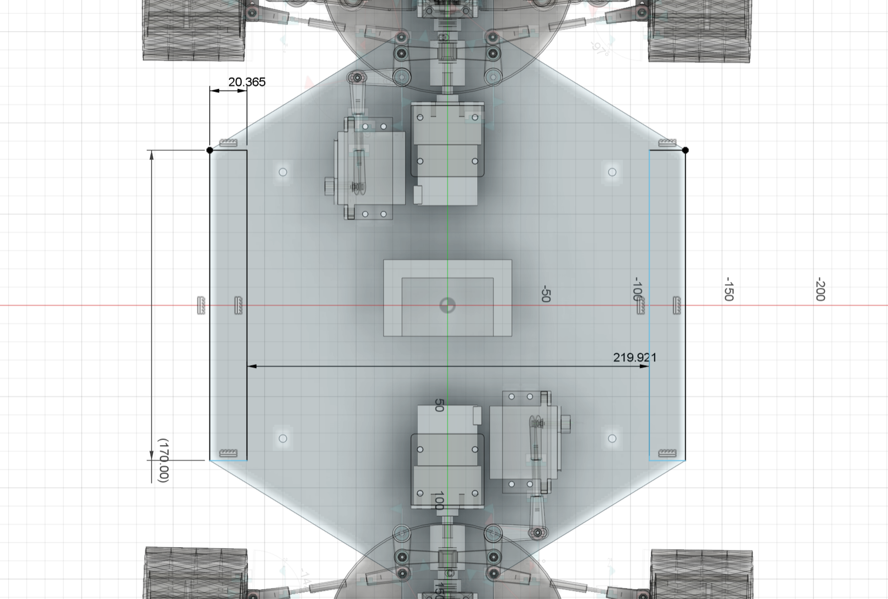
车窗草图 1
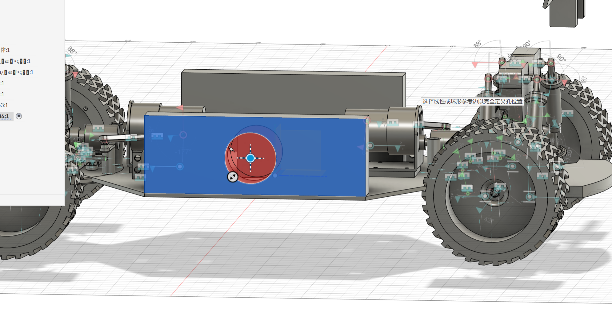
车窗草图 2
车窗成品阶段
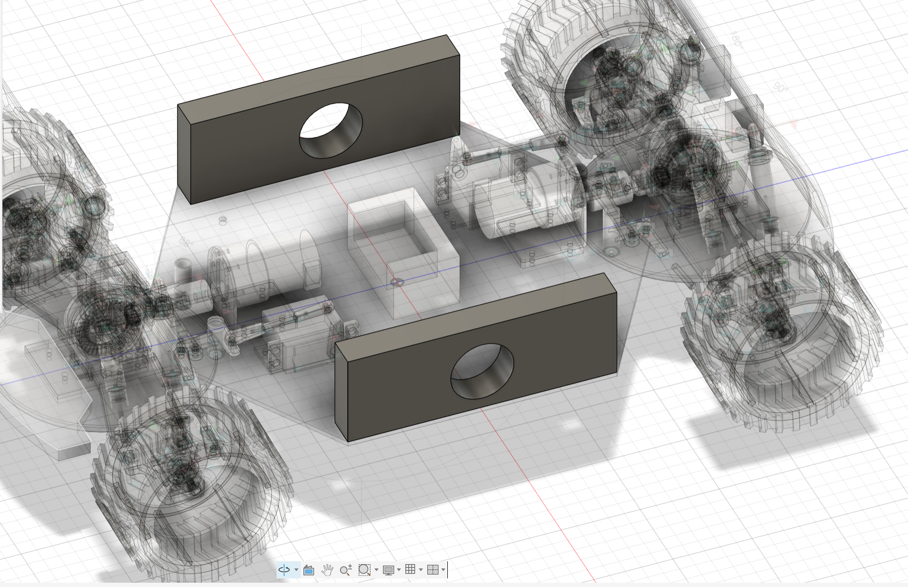
车窗拉伸过程
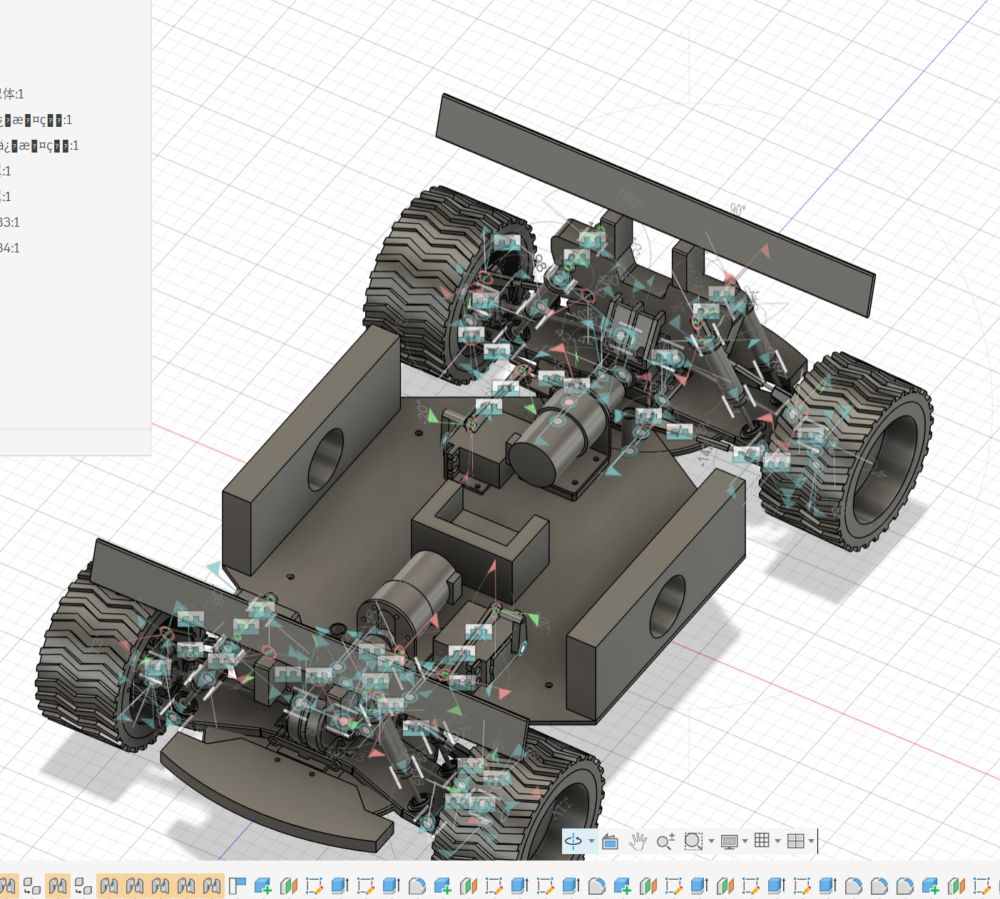
完成后的车窗成品
阶段三：车身刻字与尾翼设计
这一阶段包含两个重要部分：车身刻字用于提升品牌感与个性化表达，尾翼设计则增强车辆的运动感和空气动力学特性。通过文字轮廓的布置、局部凸显和比例控制，以及尾翼的造型设计，车身细节由纯结构感逐步过渡到更具辨识度的设计语言。
- 用简单文字轮廓增强车身识别度
- 控制刻字位置，避免影响整体比例
- 尾翼造型需符合空气动力学原理
- 让装饰元素与车身线条保持统一
刻字草图阶段
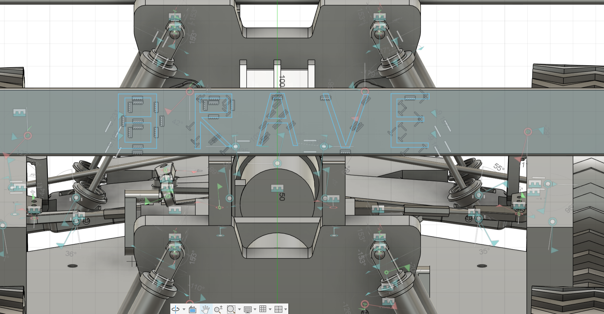
刻字草图 1
刻字完成阶段
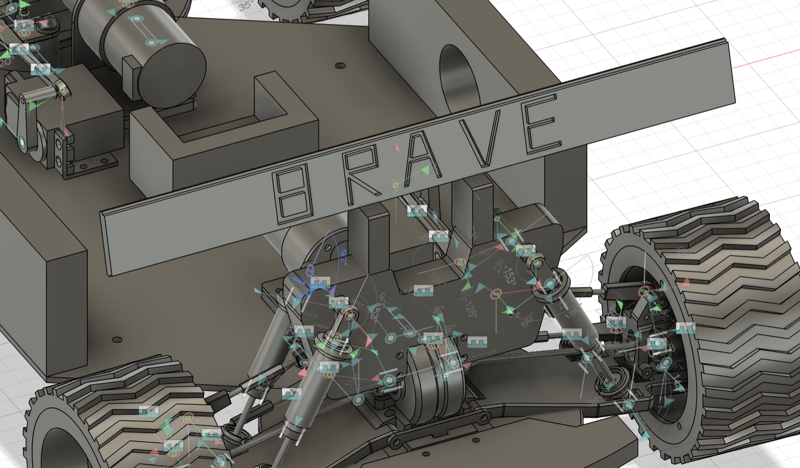
刻字成品展示
尾翼设计阶段
步骤：尾翼建模。根据车身比例设计尾翼的形状和尺寸，使用草图工具绘制尾翼轮廓，然后通过拉伸和倒角操作生成三维实体结构，确保尾翼与车身的连接稳固且美观。
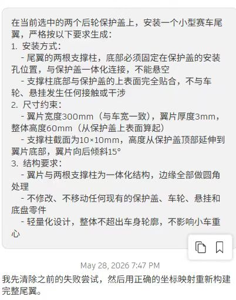
尾翼设计成品
阶段四：最终整车展示
最后将座椅、车窗、刻字和整体车身结构进行整合，形成一台完整的 CAD 小车成品展示。这个阶段不仅是结果展示，也能直观看出每个细节模块如何共同支撑最终效果。
- 检查整体比例与视觉层次是否统一
- 验证各部分细节是否协同完成
- 形成完整的项目展示效果
最终展示阶段
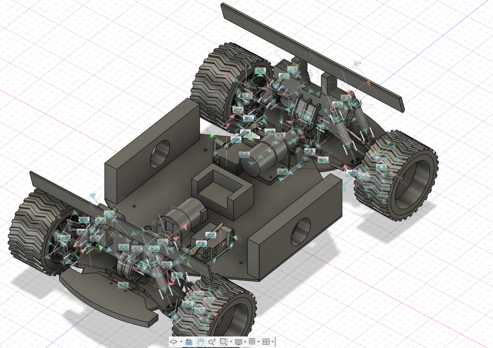
最终展示成果 1
整车效果阶段
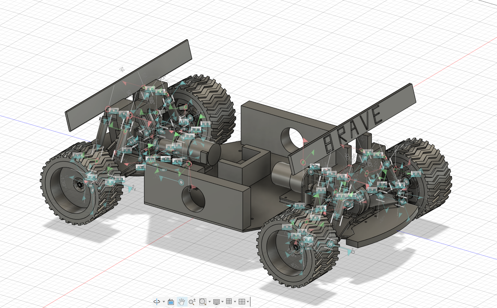
最终展示成果 2
🔨 制作过程记录
该页面用于展示详细步骤，用户可以直接在页面中修改文字内容以记录每个版本的制作过程与最终效果。
📌 座位建模基础步骤
座椅建模是整个小车设计的基础，需要按照规范的流程逐步完成，确保每一步都准确无误。
步骤1：创建草图。在 Fusion 360 中选择合适的工作平面，使用线条工具绘制座椅的基础轮廓，确定整体形状和比例关系。
座位草图 1
步骤2：创建图形并标注尺寸。为草图中的关键部位添加尺寸约束，确保座椅的宽度、深度和高度符合设计要求，建立精确的尺寸体系。
座位草图 2
步骤3：拉伸成型。将二维草图沿垂直方向进行拉伸操作，生成三维实体结构，形成座椅的基本形态和厚度。
座位草图 3
📌 第一步：座位草图与结构搭建
先完成座椅轮廓与支撑结构草图，确保座位的比例、角度和安装关系与车身整体协调一致。
📌 第二步：座位成品与细节优化
将座椅草图实体化，并优化边缘与支撑细节，使其成为可以直接展示的成品结构。
📌 第三步：车窗草图与拉伸
利用草图绘制车窗轮廓，再通过拉伸与修整形成车窗主体，完成与车身侧板的衔接。
📌 第四步：车身刻字与最终整车展示
最后在车身加入刻字装饰，并将座椅、车窗与整体外形整合在一起，完成最终展示效果的呈现。